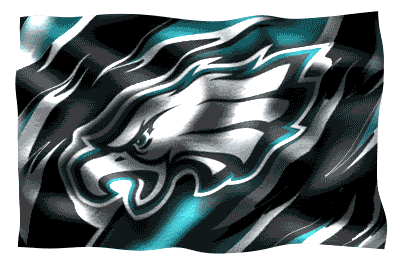

The Underdogs, Our Success Story!
We love an underdog. Everybody embraces the lovable team that’s not expected to win, especially when people can’t find a team to root for.
There are two types of underdogs. The first is the lifelong underdog, the classic — someone or some team that has never had the ability and has no history of winning. Maybe even the classic lovable loser.
Then there’s the other kind: a power who’s had injuries or some outside force that has turned a magical season into something else. The Eagles are that type of underdog.
The Eagles were the No. 1 seed in the NFC, but when Carson Wentz went down with a torn ACL late in the season, we turned to Nick Foles to guide the offense. The Eagles are the first home underdog in the Divisional Round since 1970.
Underdog status also unites a fan base with its players. Eagles players wore dog masks, and so did the fans. It’s a rallying cry that the fan base can understand, because we know the feeling of being an underdog at some point in our lifetime.
Winning in the NFL is sweet. It’s something that makes every single person in the city happy. Winning a Super Bowl is a feeling that we have never experienced in Philly. So when you’re the underdog and you win, you feel an extra sense of pride & joy and an extra sense of accomplishment. That’s why we love underdogs and I love underdogs!
